기본정보
- 출시 : 2011.12.04
- 제작 : 라이엇 게임즈
- 장르 : MOBA
- 등급 : 12세이상 이용가
- 가격 : 부분유료화
- 플랫폼 : Windows, Mac
- 권장사양 ▽
OS : Windows 11 정품 (x64)
CPU : Intel: Core i5-3300 AMD: Ryzen 3 1200 ARM: 미지원
램 : 4GB
하드 : SSD 16GB 이상
그래픽 : NVidia: GeForce 560 AMD: HD 6950 Intel: Intel UHD 630 내장 그래픽 (비디오 메모리 2GB 이상)
리그 오브 레전드란?
게임 소개
- 리그 오브 레전드는 세계 최고의 MOBA(Multiplayer Online Battle Arena) 게임입니다. 끝없이 이어지는 실시간 전투와 협동을 통한 팀플레이, RTS와 RPG를 하나의 게임에서 동시에 즐길 수 있는 새로운 장르의 온라인 게임입니다. 두 팀은 각기 독특한 특성과 플레이스타일을 자랑하는 강력한 챔피언을 소환하여, 다양한 모드의 전장에서 정면 대결을 펼칩니다. 신규 챔피언이 끊임없이 추가되며, 지속적인 업데이트가 이루어지고, 흥미진진한 e스포츠 대회의 중심이기도 한 리그 오브 레전드에서 많은 동료 소환사들과 함께 박진감 넘치는 전투를 즐겨보세요!
게임 목표
- 넥서스 파괴
- 각 팀의 최종 목표는 상대 팀의 기지에 위치한 '넥서스'를 파괴하는 것입니다. 넥서스는 기본 구조물로, 이를 파괴하면 게임에서 승리하게 됩니다.
게임 진행
- 챔피언 선택
- 게임 시작 전, 각 플레이어는 '챔피언'이라 불리는 캐릭터를 선택합니다. 챔피언은 고유한 능력과 역할(탱커, 딜러, 암살자, 서포터 등)을 가지고 있습니다.
- 라인과 정글
- 탑, 미드, 봇 라인: 맵은 세 개의 주요 길(라인)로 나뉘어 있습니다. 각 라인에는 챔피언들이 배치되어 미니언(자동으로 이동하는 AI 유닛)과 함께 전투를 벌입니다.
- 정글: 라인 사이의 공간에는 '정글'이 있습니다. 여기에는 중립 몬스터가 있으며, 정글러 역할의 챔피언이 이를 처치하여 골드와 경험치를 얻습니다.
- 골드와 아이템
- 골드 획득: 챔피언은 미니언, 적 챔피언, 정글 몬스터 등을 처치하여 골드를 얻습니다.
- 아이템 구매: 획득한 골드로 다양한 아이템을 구매하여 챔피언을 강화합니다. 아이템은 상점에서 구매할 수 있습니다.
- 포탑 및 억제기 파괴
- 각 라인에는 적의 포탑과 억제기가 배치되어 있습니다. 이를 파괴하여 넥서스로 접근해야 합니다. 억제기를 파괴하면 강력한 슈퍼 미니언이 스폰됩니다.
- 팀 전투 및 주요 오브젝트 관리
- 팀워크: 게임 중반부터는 한타(팀 전투)가 중요해집니다. 전략적인 플레이와 팀워크로 상대 팀을 제압하는 것이 핵심입니다.
- 오브젝트 컨트롤 : 맵에는 주요 오브젝트인 드래곤과 바론이 있습니다. 이들을 처치하면 팀 전체에 강력한 버프가 주어집니다.
포지션별 역할 및 챔피언 소개
- 리그 오브 레전드에선 5개의 포지션이 있으며 현재 챔피언의 수는 167명이 존재합니다. 각 챔피언에 대한 자세한 정보와 스토리는 챔피언 페이지나 스토리 페이지 에서 확인하실 수 있습니다.
- 탑
- 위치 : 맵의 상단 라인
- 주 역할 : 주로 단독 라인전에서 강력한 챔피언을 선택하여 적 탑 라이너를 상대합니다. 게임 중반 이후에는 한타에서 탱킹 역할을 하거나, 사이드 라인을 밀어내는 역할을 합니다.
- 탑의 대표적인 일부 챔피언입니다.
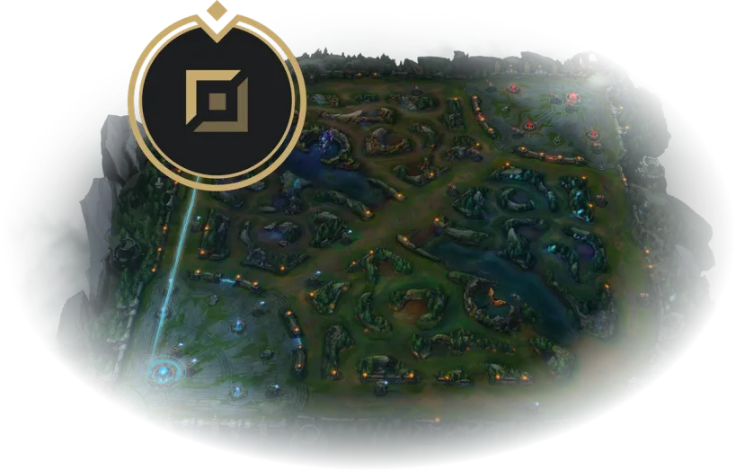
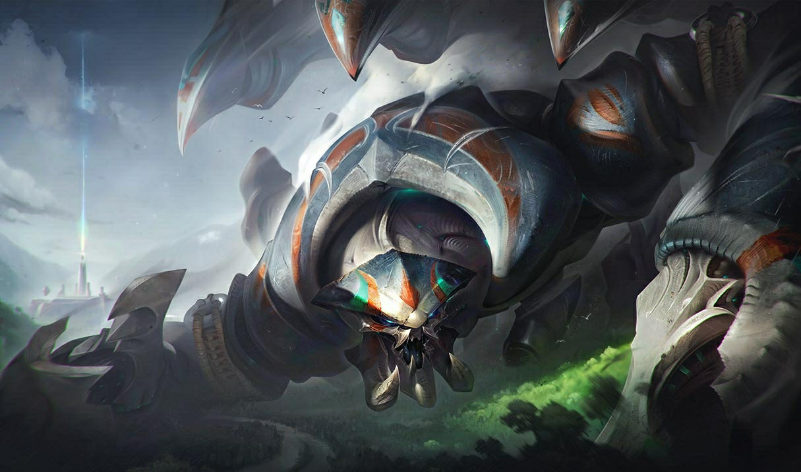
스카너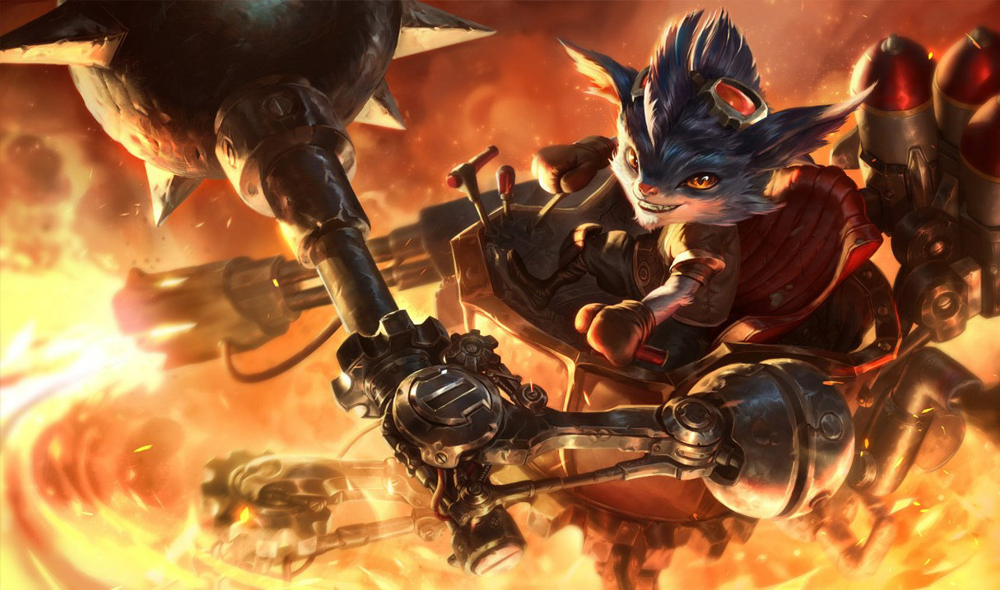
럼블 아트록스
아트록스
 다리우스
다리우스
 잭스
잭스
- 정글
- 위치 : 맵의 정글 지역
- 주 역할 : 라인에 서지 않고, 맵 곳곳의 정글 몬스터를 사냥하며 골드와 경험치를 획득합니다. 게임의 초반부터 각 라인을 지원(갱킹)하며, 주요 오브젝트(드래곤, 바론)를 관리하는 역할을 합니다.
- 정글의 대표적인 일부 챔피언입니다.
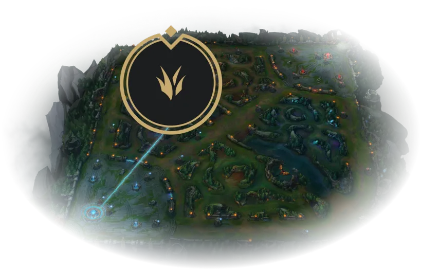
 니달리
니달리
 카서스
카서스
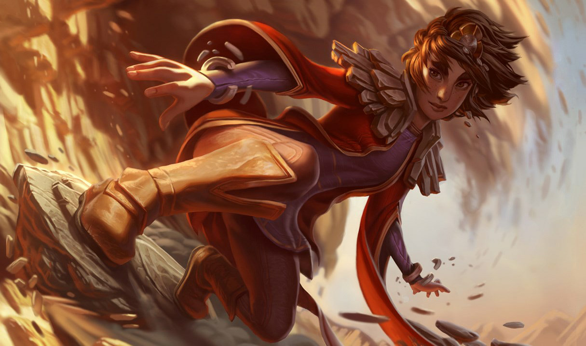
탈리야 카직스
카직스
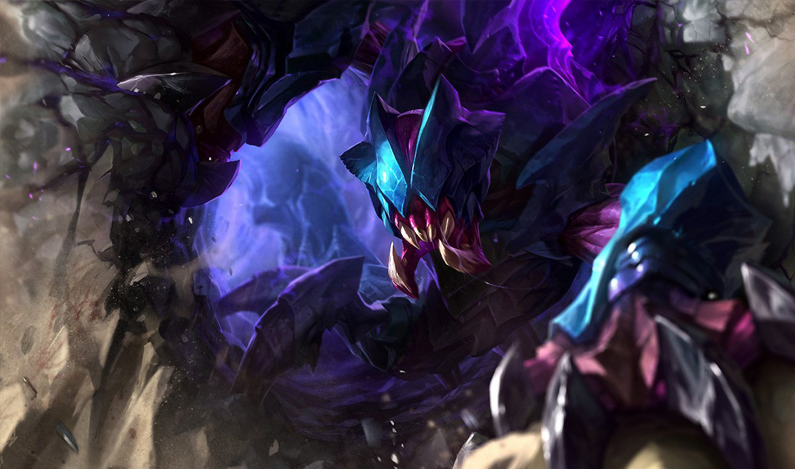
렉사이
- 미드
- 위치 : 맵의 중앙 라인
- 주 역할 : 주로 강력한 마법사나 암살자를 선택하여 적 미드 라이너를 상대합니다. 게임 중반부터는 다른 라인을 지원하거나 한타에서 큰 피해를 입히는 역할을 합니다.
- 미드의 대표적인 일부 챔피언입니다.
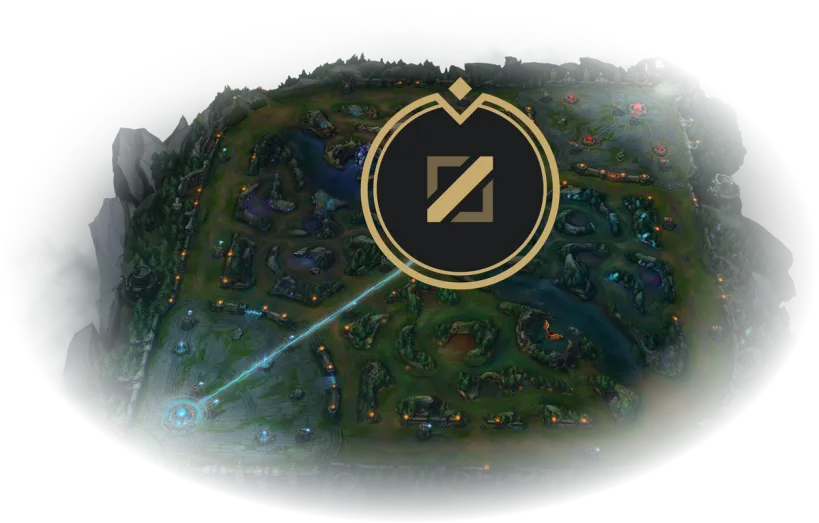
 아크샨
아크샨
 트위스티드 페이트
트위스티드 페이트
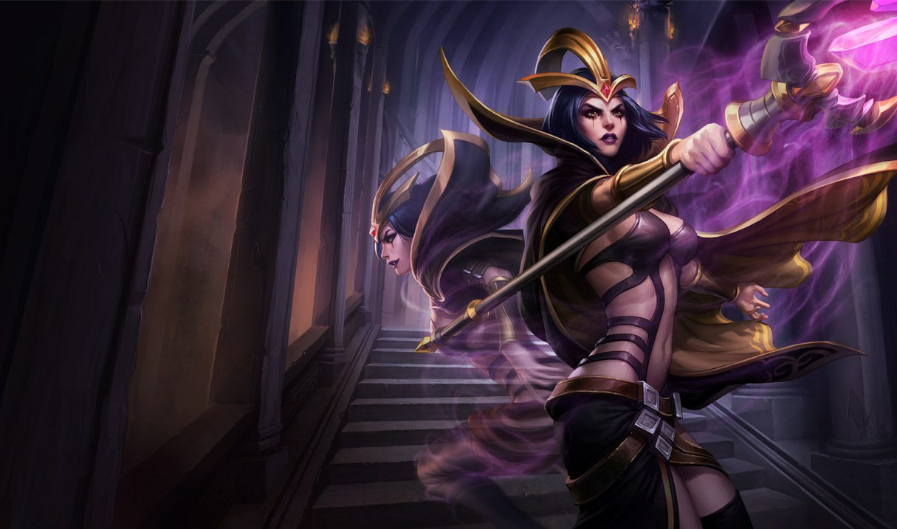
르블랑 흐웨이
흐웨이
 사일러스
사일러스
- 바텀(원딜)
- 위치 : 맵의 하단 라인
- 주 역할 : 팀의 주된 물리 피해 딜러로, 초반에는 서포터와 함께 라인전을 진행합니다. 게임 후반에는 한타에서 높은 공격력을 발휘하여 적을 처치하는 역할을 합니다.
- 원딜의 대표적인 일부 챔피언입니다.
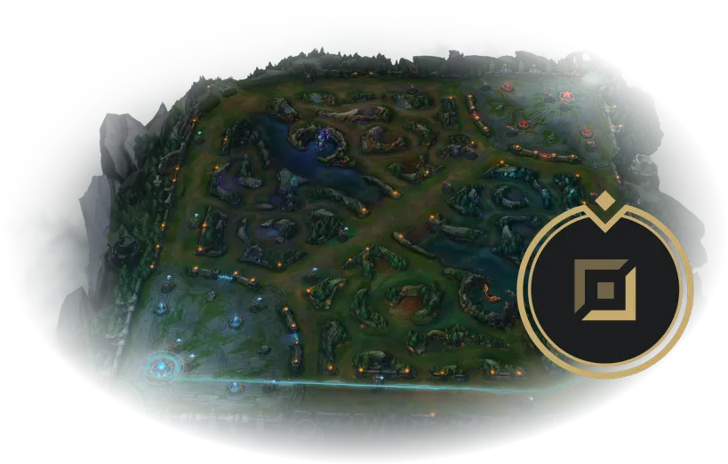
 애쉬
애쉬
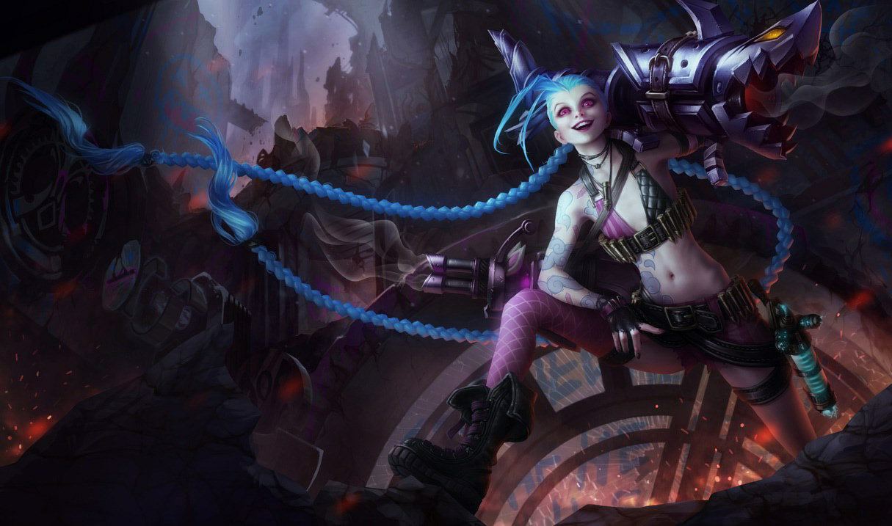
징크스 카이사
카이사
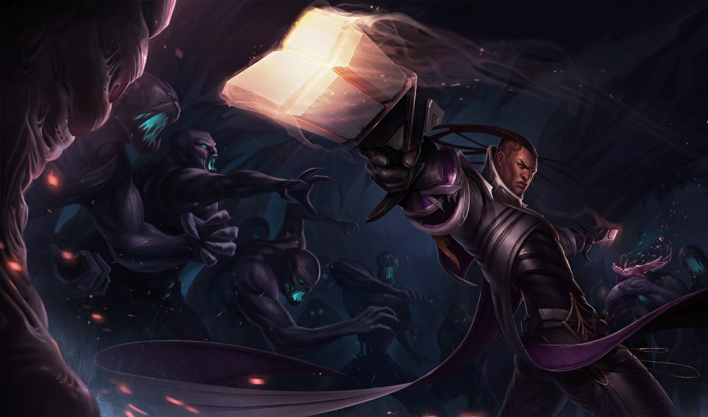
루시안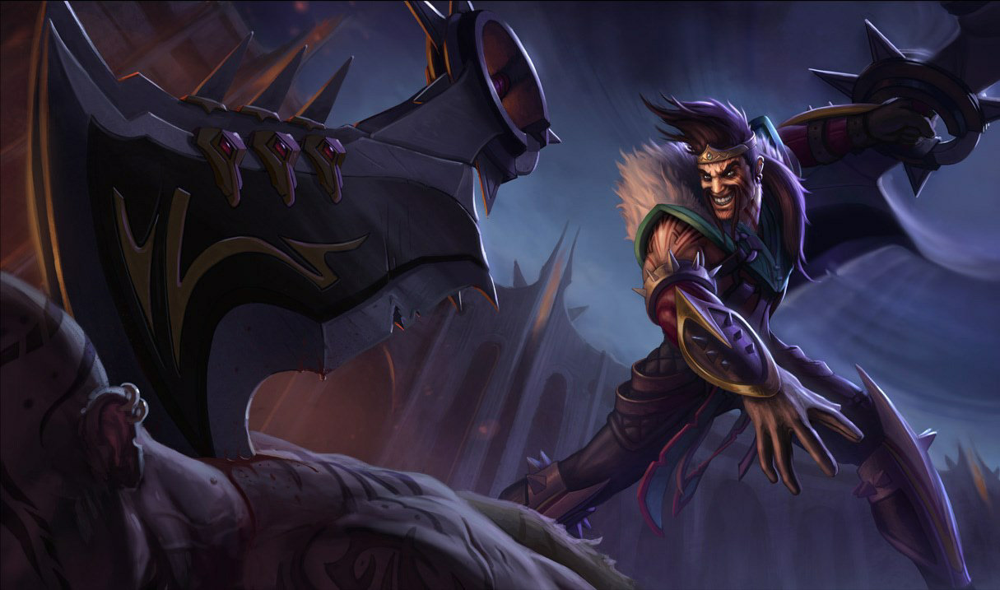
드레이븐
- 바텀(서포터)
- 위치 : 맵의 하단 라인
- 주 역할 : 원딜러를 보호하고 지원하며, 게임 초반에는 와드 설치를 통해 시야를 확보하고, 적의 갱킹을 방어합니다. 게임 중반 이후에는 한타에서 아군을 지원하는 역할을 합니다.
- 서포터의 대표적인 일부 챔피언입니다.
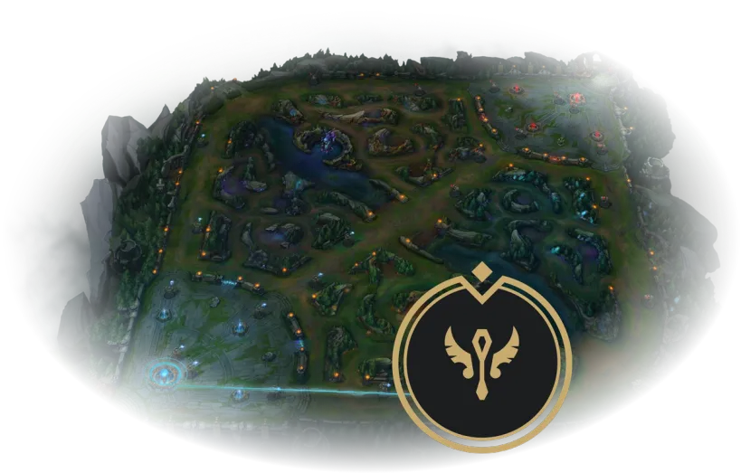
 블리크츠랭크
블리크츠랭크
 파이크
파이크
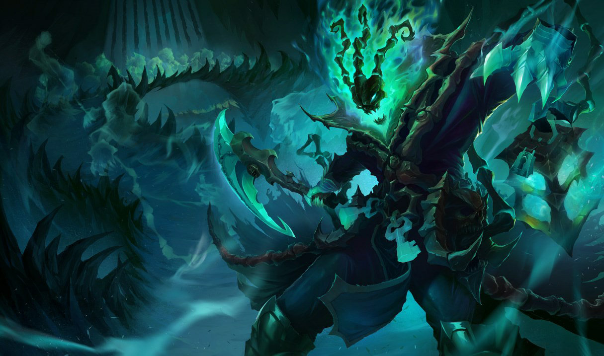
쓰레쉬 노틸러스
노틸러스
 브라움
브라움
기본적인 요소
- 게임을 이해하는 데에 있어서 추가적인 부분입니다.
소환사의 협곡(맵)
- 리그 오브 레전드의 대표적 전장인 소환사의 협곡은 가장 많은 플레이어들이 선호하는 전장입니다. 각 다섯 명의 챔피언으로 두 팀을 구성하여, 세 갈래 공격로와 넓은 정글을 오가며 교전을 펼치게 됩니다. 정글에는 강력한 효과를 부여해 주는 중립 몬스터들이 포진해 있습니다. 공격로 대치 단계가 길고, 대규모 팀간 전투가 벌어지는 것이 가장 큰 특징입니다.
 소환사의 협곡
소환사의 협곡
 소환사의 협곡 지도
소환사의 협곡 지도
오브젝트
- 흔히 리그 오브 레전드에서 에픽 몬스터들을 오브젝트라고 말합니다. 공허 에픽 몬스터들은 타워 철거에 도움을, 드래곤들은 교전에 도움을 주는 효과가 있습니다.
- 드래곤(용)
- 드래곤은 처치 시 원소 종류에 따라 고유의 추가 효과를 부여하는 강력한 몬스터입니다. 6종류의 원소 드래과 장로 드래곤으로 나뉩니다.
- 공허 유충
- 공허 유충은 처치 시 모든 팀원이 포탑을 공격할 때 추가 고정 피해를 입히는 버프를 영구히 제공받습니다. 공허 유충을 4마리 잡으면 타워를 공격할때 공허 진드기가 소환되고 6마리를 잡으면 두 마리씩 소환됩니다.
- 협곡의 전령
- 협곡의 전령은 처치 시 보상으로 전령의 눈이 생성되는데, 이를 획득 시 장신구가 전령의 눈으로 교체됩니다. 전령을 처치관여한 모든 아군이 1회용으로 귀환 강화 버프를 받습니다.
- 전령의 눈 보유 시 : 귀환이 강화되며 사용 전이나 전령의 눈의 지속 시간이 끝나기 전까지 지속됩니다.
- 전령의 눈 사용 시: 1초 동안 정신 집중 후 전령의 눈을 소비하여 협곡의 전령을 소환합니다. 소환된 전령은 근처 공격로로 이동하여 적 포탑을 공격합니다.
- 내셔남작(바론)
- 내셔 남작은 정글에서 가장 강력한 몬스터입니다. 내셔 남작을 처치하면 해당 팀 전체가 공격력 및 주문력 증가, 귀환 강화 효과를 얻으며, 챔피언 근처의 미니언들이 강화됩니다.
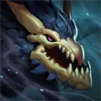
바람 드래곤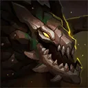
대지 드래곤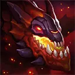
화염 드래곤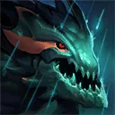
바다 드래곤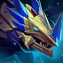
마법공학 드래곤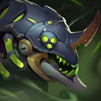
화학공학 드래곤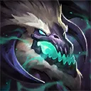
장로 드래곤 공허 유충
공허 유충
 협곡의 전령
협곡의 전령 전령의 눈
전령의 눈
 귀환 강화
귀환 강화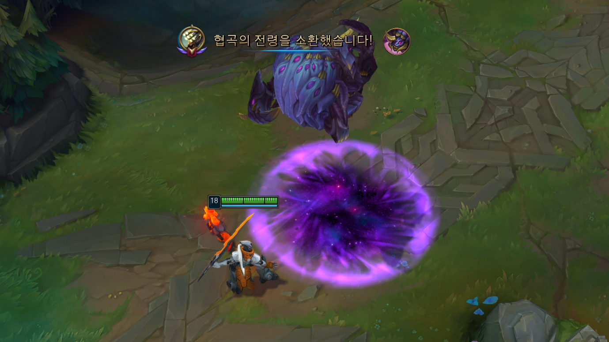
전령 소환 하는 모습 포탑에 박치기하는 전령
포탑에 박치기하는 전령
 내셔 남작
내셔 남작
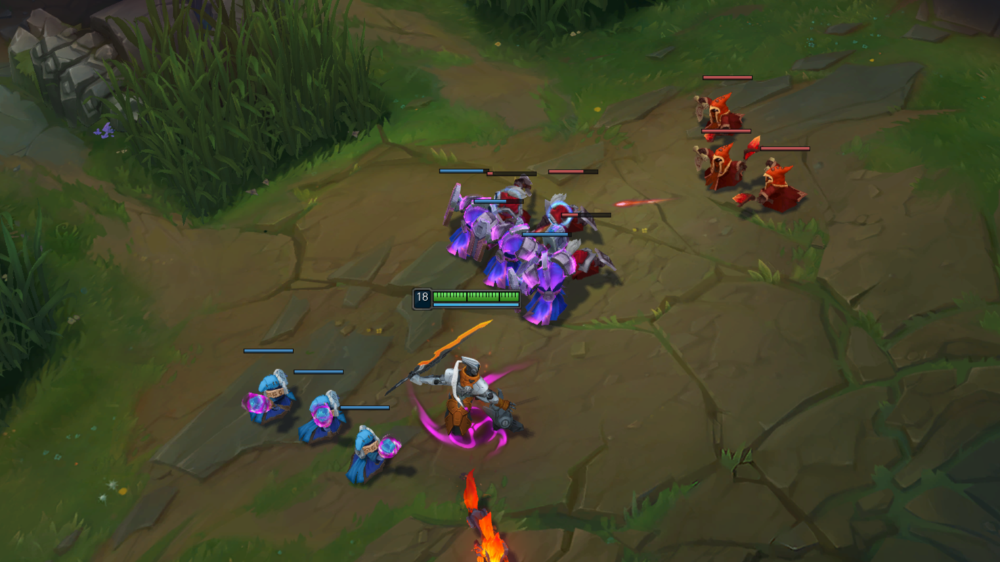
버프로 미니언이 강화된 모습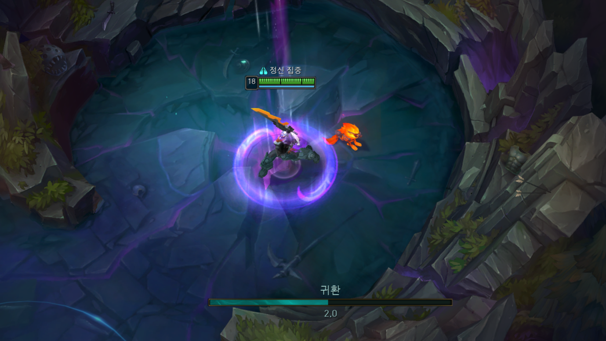
버프로 귀환이 강화된 모습스킬 및 소환사 주문
- 스킬
- 대부분의 챔피언은 기본 지속 효과, 3개의 기본 스킬, 궁극기로 이루어진 5개의 고유 스킬을 가지고 있습니다. 스킬 사용 기본 키는 Q, W, E, R입니다.
- 소환사 주문
- 챔피언의 스킬과는 별개로 모두가 사용할 수 있는 특수한 스킬입니다. 게임 시작전 2개만 고를 수 있으며 해당 게임에선 그 주문들만 쓸 수 있습니다. 주문 사용 기본 키는 D, F입니다.
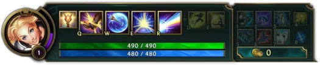
스킬창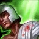
회복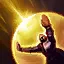
방어막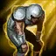
탈진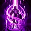
순간이동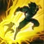
점멸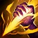
강타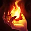
점화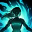
정화상점(아이템)
챔피언의 능력치를 올려주고 부가 효과를 부여하여 게임 진행을 쉽게 해주는 요소들입니다. 챔피언 자체의 능력치나 레벨, 스킬 못지않게 챔피언을 강화시켜주기 때문에, 해당 챔피언에 적합한 아이템을 얼마나 빠르게 완성시키느냐가 게임의 핵심 플레이가 됩니다.
- 시작 및 기본 아이템
- 시작 아이템 : 게임 시작 때 구매할 수 있는 아이템입니다. 골드 대비 효율이 뛰어납니다.
- 기본 아이템 : 기본 아이템들은 다양한 상위 아이템들을 만들기 위한 첫 번째 재료의 역할을 합니다. 능력치만 주고 옵션이 없다는 특징이 있습니다.
- 신발 아이템
- 신발 아이템 : 이동 속도를 올려주는 아이템들입니다.
- 서사급 아이템
- 서사급 아이템 : 기본 아이템보다 우수한 성능을 가지고 있으며 이에 더불어 유용한 부가 효과를 가진 경우가 많습니다.
- 전설급 아이템
- 전설급 아이템 : 일반적인 완성 아이템으로, 이 아이템을 재료로 갖는 상위의 아이템이 없는 아이템들을 의미합니다.
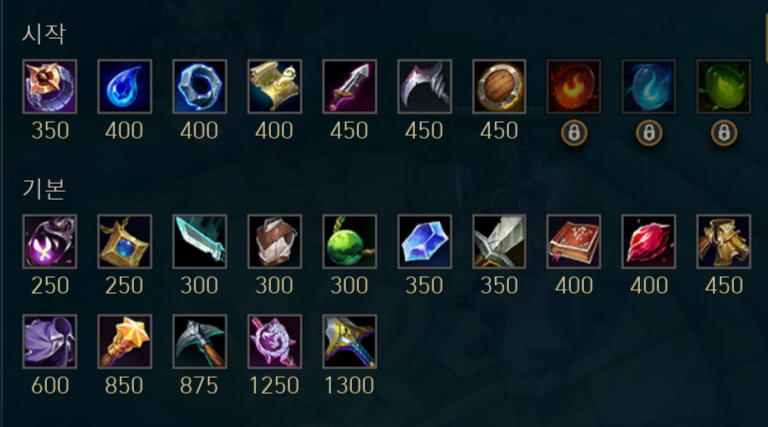
시작 아이템과 기본 아이템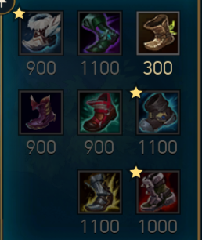
신발 아이템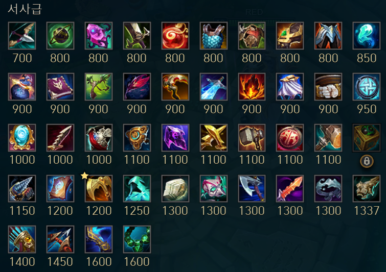
서사급 아이템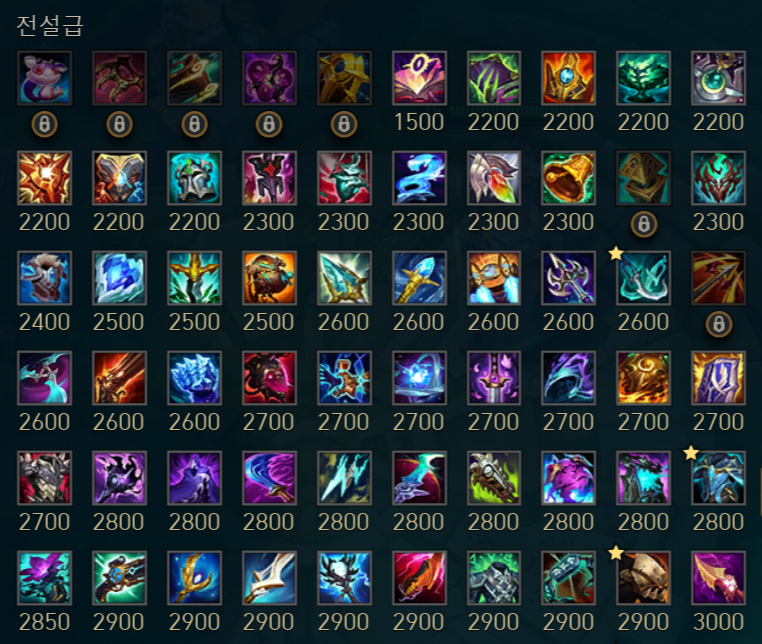
전설급 아이템모드 소개
- 리그 오브 레전드에는 6개의 모드가 있습니다.(일반 솔랭 자랭 칼바람 이벤트(우르프 아레나 단일 등) 봇전)
- 일반 게임
- 기본적으로 빠른 대전 게임입니다. 유저 10명이 5 vs 5로 팀을 나눠서 진행됩니다. 포지션, 챔피언, 룬, 스펠 등을 선택하고 진행됩니다.
- 개인/2인 랭크 게임
- 일반 게임과 동일하나 티어라는 점수 시스템이 추가 되었습니다. 개인 혹은 2인 듀오로 게임을 할 수 있는 랭크, 줄여서 솔랭이라고도 부릅니다. 솔랭이 자유랭보다 인기가 높고 더 대중적인 만큼 티어 가치도 높게 쳐주는 경향이 있습니다.
- 자유랭크
- 솔랭과 동일하나 파티플레이에서 차이가 있습니다. 1~3인 또는 5인으로 팀을 만들어 게임이 가능한 랭크입니다. 4인 파티로는 정치질, 강제 서렌 문제로 인해 플레이가 불가능합니다. 줄여서 자랭, 자유랭 부릅니다.
- 칼바람 나락
- 얼어붙은 땅, 좁은 다리 위에서 무작위 챔피언 5:5 팀 전투가 벌어집니다. 중립 지역이 없고 공격로가 단 하나 입니다. 그래서 기존 협곡과는 다르게 게임 시작부터 끝까지 한타와 대치의 중요도가 매우 높은 맵이며 상대적으로 훨씬 빨리 끝납니다.
- 봇전
- 이름 그대로 AI와 게임을 하는 모드입니다. 아직 대인전을 할 실력을 쌓지 못한 초보 유저들이 이 모드에서 게임을 익힐 수 있습니다. 난이도는 입문, 초보, 중급이 있습니다.
이벤트 모드
- 기간 한정으로 플레이할 수 있는 리그 오브 레전드의 게임 모드입니다. 대표적인 모드들만 소개하겠습니다.
- 단일 챔피언
- 팀원 전원이 동일한 챔피언으로 게임을 하는 모드입니다. 픽창에서 팀원이 선택한 챔피언들 중 하나가 무작위로 팀 모두에게 적용됩니다.
- U.R.F.모드
- 이 모드에선 다양한 버프를 받게되는데 이로 인해 주로 스킬을 난사하거나 극한의 이속이나 공속을 올려 재미있는 게임 플레이가 핵심입니다. 패치노트에따라 픽창에선 블라인드 픽 또는 랜덤 픽으로 시작합니다.
특징 및 장단점
특징
- 이 게임의 특징이라면 다른 게임들의 비해 다양한 많은 챔피언들이 있습니다. 각각 개성이 있는 컨셉과 스킬들이 있으며 챔피언들의 세계관들 또한 잘 구현되어 있습니다. 계속해서 꾸준한 패치로 인해 변화를 주어 유저들이 질리지 않으며 출시 된지 10년이 지난 지금도 상당한 인기가 있는 게임입니다.
장점
- 다양한 챔피언과 플레이 스타일
- 각기 다른 능력과 스킬을 가진 다양한 챔피언들이 있어 플레이어는 자신의 취향과 전략에 맞는 챔피언을 선택할 수 있습니다.
- e스포츠
- 리그 오브 레전드는 e스포츠를 인기 높이는데 큰 기여을 했습니다. e스포츠중에서 가장 인기 있는 게임이고 롤드컵을 할 땐 아티스트들 와서 공연도 하기에 무대를 보는 즐거움도 있습니다.
- 지속적인 업데이트
- 10년이 지난 지금도 아직도 인기게임인 이유는 지속적인 업데이트입니다. 유저들이 질리지 않도록 늘 새로운 변화를 주어 유저들에게 신선한 경험을 제공합니다.
단점
- 고의트롤
- 사실상 게임 문제라고 하기 보단 유저들의 문제가 더 큽니다. 하지만 이러한 고의트롤에 대한 처벌이 미미하거나 잘 잡지도 않아 스트레스로 인해 떠나간 유저들도 있습니다.
- 밸런스 문제
- 167개 챔피언이 존재하다 보니, 일부 챔피언은 너무 강력하거나 약하게 느껴질 수 있습니다. 패치와 업데이트로 밸런스를 맞추려 하지만, 완벽하게 조정하기는 어렵습니다.
- 너무 빠른 변화
- 지속적인 패치는 좋으나 적응을 하기도 전에 협곡에 새로운 변화를 줘서 메타에 잘 따라가지 못하거나 랭크게임이 초기화 되어 다시 티어을 올리는 스트레스로 인해 떠나간 유저들도 있습니다.
어떤 영향 tmi
월드 챔피언십(롤드컵)
- 롤에선 여러 종류에 대회가 있지만 그중 가장 인기있는 대회는 월드 챔피언십입니다. 월드 챔피언십은 리그 오브 레전드의 최종 결승전으로, 전 세계에서 최고의 팀들이 모여 대결하는 대회입니다. 2011년 부터 시작해 현재까지 롤드컵이 진행되고 있습니다.
세계인 인기
- 세계적으로 상당한 인기를 보여주는 게임입니다. 특히 한국, 중국에서는 각 국가의 게임 시장을 통틀어 압도적인 인기를 보여주는 게임이라 보아도 과언이 아닙니다. 특히 한국에서는 대한민국 비디오 게임 역사상 가장 성공한 게임으로 여겨질 정도로 엄청난 장기적 성공을 거두었습니다.
음악회사
- 유저들 사이에서는 라이엇 게임즈는 음원을 잘 뽑는다고 칭찬이 자자합니다. 대표적으로 POP/STARS, Warriors, Rise 등 있습니다.
참고 자료
나무위키
- 본 웹사이트에서 사용된 사진 나무위키에서 가져왔습니다. (나무위키 바로가기)
리그 오브 레전드(공식사이트)
- 본 웹사이트에서 사용된 자료 중 일부는 리그 오브 레전드에서 가져왔습니다. (리그 오브 레전드 바로가기)